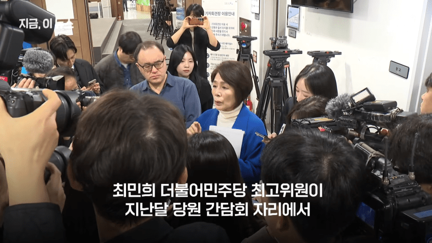
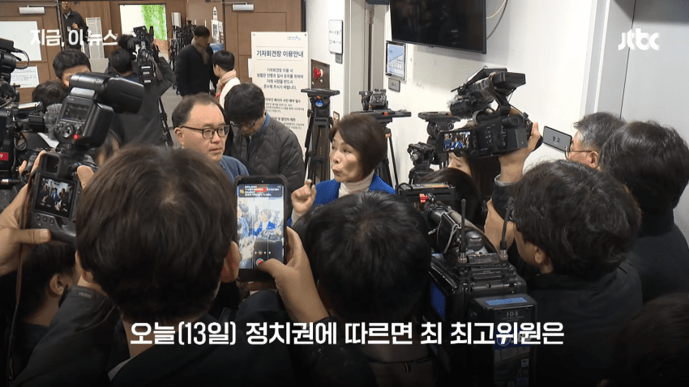
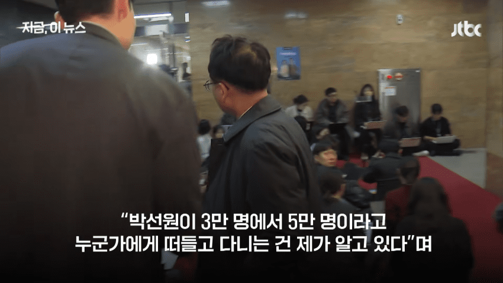
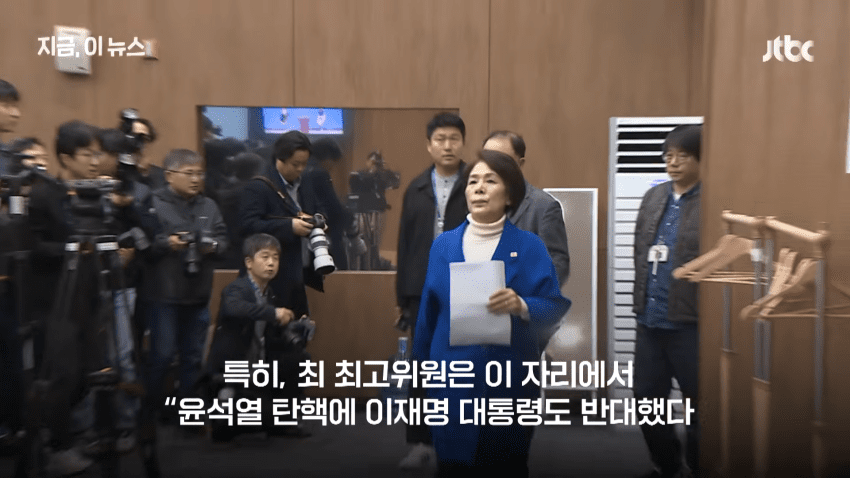
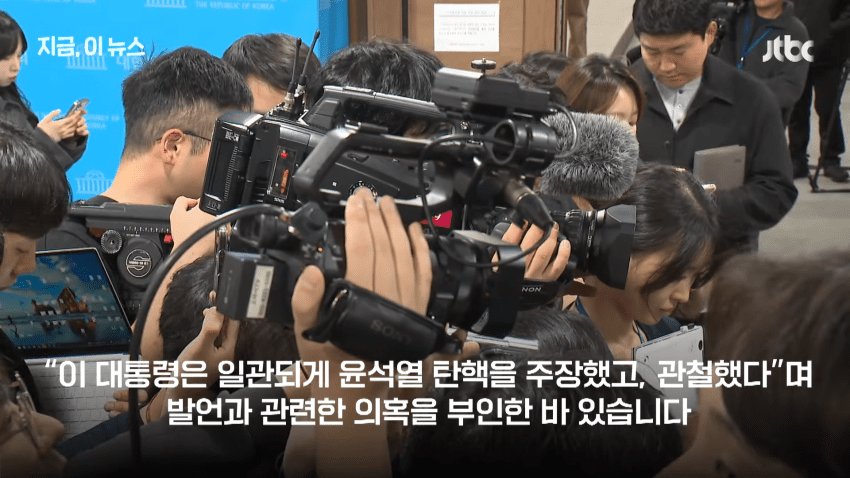
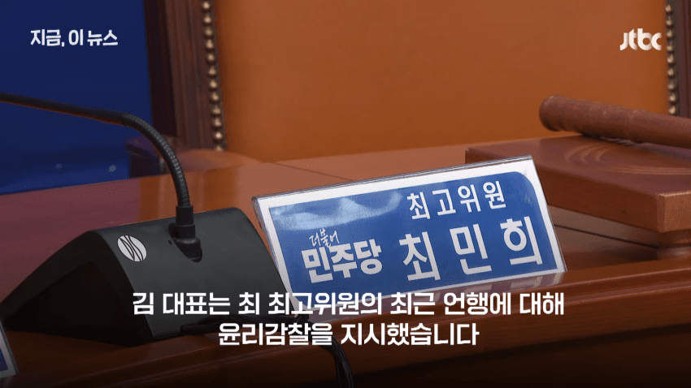
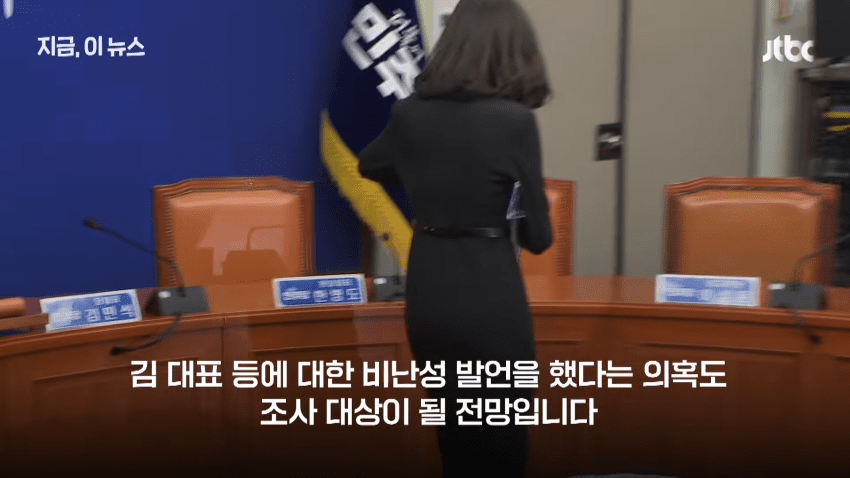

[외부 동영상 원본 열기]출처: 더불어민주당 비대위 갤러리 [원본 보기]
댓글
수집 당시 댓글 10개
████████ · 11.13 19:06:26
ㅇㅇ · 11.13 19:08:56
ㅇㅇ · 11.13 19:09:14
ㅇㅇ · 11.13 19:10:18
ㅇㅇ · 11.13 19:11:46
대순
찢리
· ㅇㅇ · 11.13 19:12:00
경기
동부
연합
· ㅇㅇ · 11.13 19:12:13
성남
국제
마피아
ㅇㅇ · 11.13 19:14:29
싸움닭 · 11.13 19:14:38
ㅇㅇ · 11.13 19:16:54